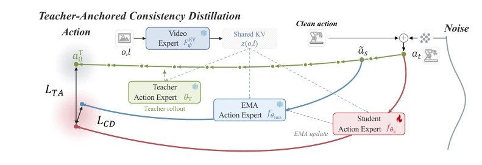
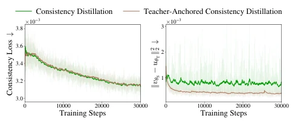
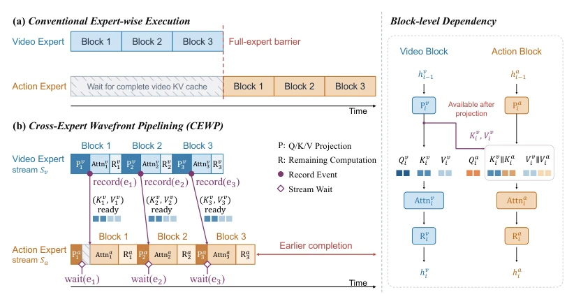
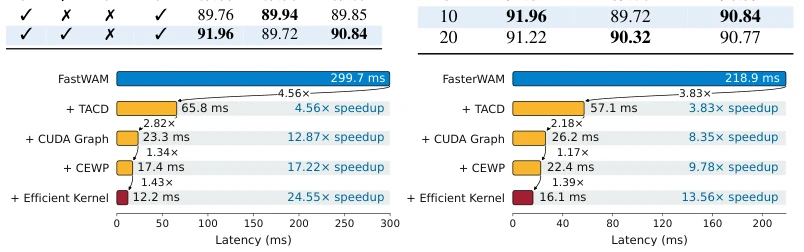

This paper performs a "major surgery" on WAM acceleration. RealtimeWAM claims a 25x speedup, which is indeed impressive, but essentially it is distillation + pipeline optimization. TACD solves the accuracy collapse of single-step distillation, CEWP transforms serial to parallel. However, the limitations of the MoT architecture remain obvious; shared backbones (such as DreamZero) are not applicable. Moreover, "real-time" is relative; 12ms on H100 may not be fast enough on real robots. Although the authors emphasize near-lossless, the distribution shift risk brought by distillation always exists. For robot control pursuing extreme latency, this solution is a powerful patch, but do not expect it to cover all architectures. Additionally, freezing the video expert saves VRAM but also limits the possibility of end-to-end optimization.
研究动机Motivation
现有 MoT 型 WAM（如 Fast-WAM, Faster-WAM）推理仍超 300ms，难以满足实时控制。瓶颈有二：一是动作去噪多步迭代（占 90% 耗时），二是视频与动作专家串行等待。Flash-WAM 虽快但精度掉太多（Akbari et al., 2026）。需要既快又准的方案。作者指出，现有蒸馏只保局部一致，忽略全局终点误差，导致单步生成动作不准。此外，专家间同步屏障导致大量空闲等待。解决这两个问题，才能让 WAM 真正落地实时系统。特别是对于长视距任务，延迟累积会严重影响控制稳定性。
Existing MoT-type WAM (such as Fast-WAM, Faster-WAM) inference still exceeds 300ms, making it difficult to satisfy real-time control. There are two bottlenecks: first, action denoising multi-step iteration (occupies 90% of time), second, video and action expert serial waiting. Flash-WAM is fast but accuracy drops too much (Akbari et al., 2026). A solution that is both fast and accurate is needed. The authors point out that existing distillation only preserves local consistency, ignoring global endpoint error, leading to inaccurate single-step generated actions. Additionally, synchronization barriers between experts cause significant idle waiting. Solving these two problems allows WAM to truly deploy in real-time systems. Especially for long-horizon tasks, latency accumulation will seriously affect control stability.
The core consists of two steps. 1. TACD: Traditional consistency distillation only preserves local consistency, ignoring global endpoint error. TACD uses the frozen teacher's multi-step rollout endpoint as an anchor, constraining the student prediction speed, ensuring single-step generated actions are accurate. This is equivalent to adding an "endpoint navigation" to distillation, preventing the student from going off course. 2. CEWP: Fine-grained dependency analysis. Action block $i$ only requires video block $i$'s KV. Block-level pipeline is implemented via CUDA Stream and Event, action expert does not need to wait for video expert to finish all calculations. Video expert sends signal after finishing projection, action expert continues calculation. This "wavefront" scheduling eliminates unnecessary synchronization waiting, making the two experts run like a relay race.

Figure 2: Overview of Teacher-Anchored Consistency Distillation (TACD). The frozen Video Ex- pert provides shared KV conditioning, while the action student is trained with local consistency supervision and a teacher-anchored constraint derived from the frozen teacher’s multi-step rollout.

Figure 3: Training curves of two distillation methods: con- sistency loss (Left) and squared distance between the stu- dent’s velocity vθS and the teacher’s average velocity to- wards the clean endpoint uθT (Right).

Figure 4: Comparison of expert execution schedules. (a) Conventional execution waits for the complete video KV cache. (b) Cross-Expert Wavefront Pipelining releases block-wise KV cache entries after projection and synchronizes only before action attention consumes them, overlapping the Video and Action Experts.
Tested on RoboTwin 2.0, LIBERO, LIBERO-Plus. Compared with Fast-WAM, Faster-WAM, Flash-WAM. The metric is success rate. RealtimeWAM single-step distillation success rate drops only <1%, latency on H100 drops from 300ms to 12ms. Ablation shows TACD is better than standard distillation, CEWP further reduces latency. It performs robustly in LIBERO-Plus distribution shift tests. Although dependent on high-end cards like H100, the 25x speedup ratio is enough to compensate for hardware costs. Code is open source, convenient for reproduction. Effectiveness is also verified on real dual-arm tasks, indicating good generalization.

Figure 5: Inference latency of RealtimeWAM built on Fast-WAM (left) and Faster-WAM (right) on a single NVIDIA H100 GPU.